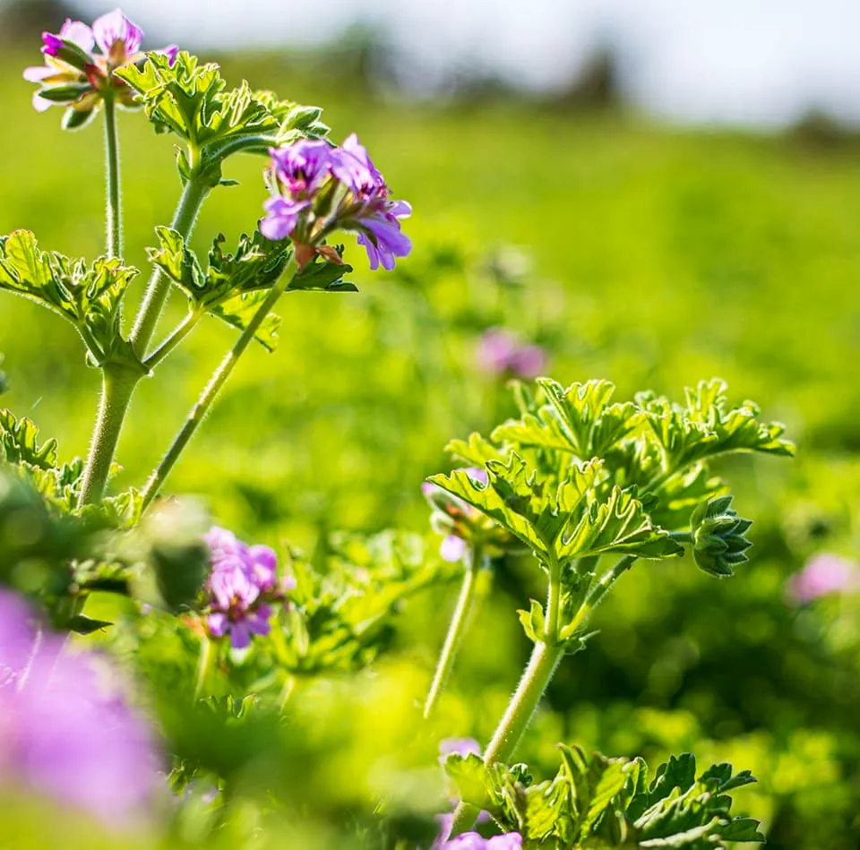
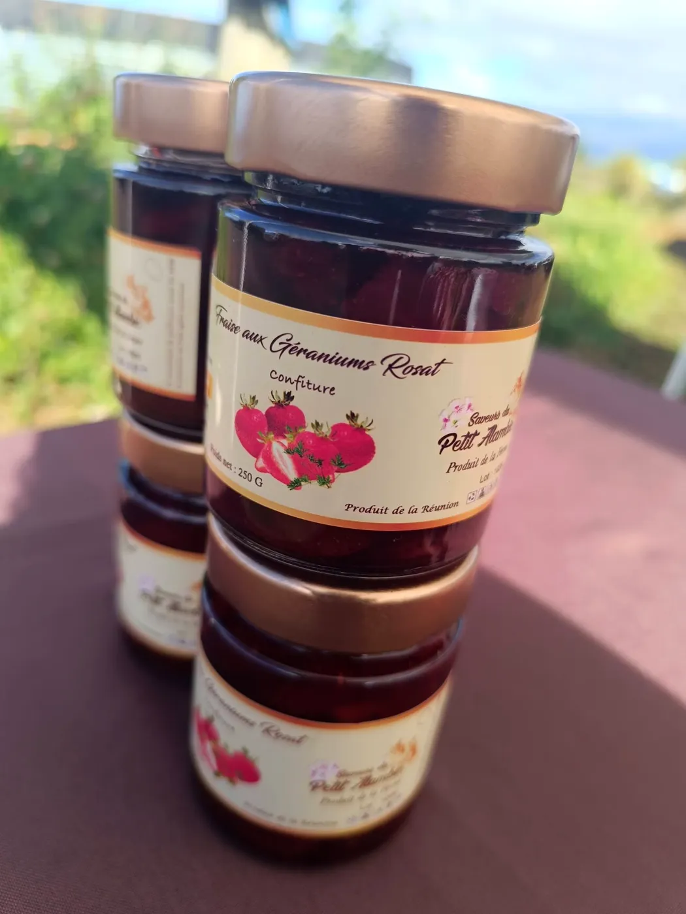
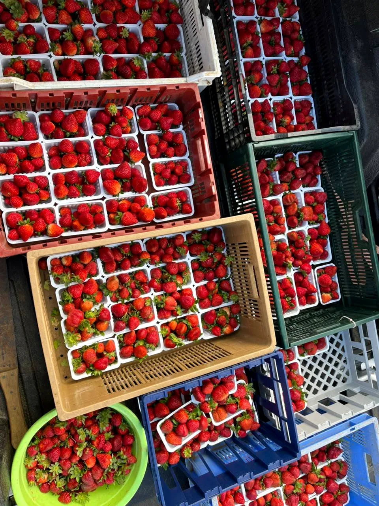
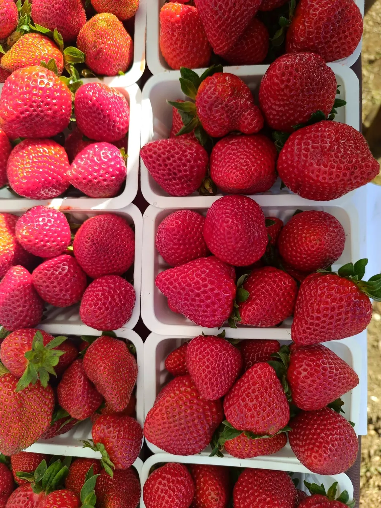
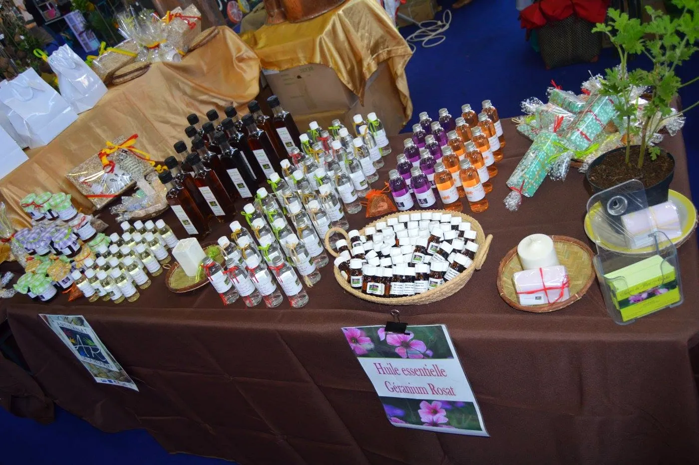

Le géranium des hauts, distillé et transformé chez nous, de la plante au flacon. Et à la belle saison, des fraises fraîchement cueillies.
Nous produisons des produits issus du géranium. Tout le procédé de transformation se fait ici, à l’exploitation du chemin du Grand Tampon : la cueillette, la distillation au petit alambic, puis les gelées, sirops et confitures qui portent son parfum.

Les produits issus de notre géranium, transformés à l’exploitation.
Confiture de fraise au géranium rosat, sirop de géranium : nos douceurs maison.
Fraîchement cueillies, en barquettes, à retrouver lors de nos ventes du samedi matin.



245 chemin du Grand Tampon · 97430 Le Tampon
Ventes annoncées chaque semaine sur notre page Facebook